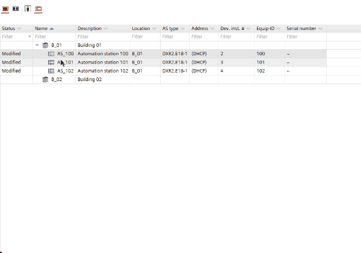

Copying devices from another building element
You can copy devices within the building structure by drag and drop.
Press the [Ctrl] key while dragging a device, otherwise the device will be moved within the building structure. When dropping the device the Add devices dialog box opens. Multi-select is not supported.

When copying a device the instance data, the I/O assignment and the assignment data of the source device are copied into the newly created device.

Copy a device from another building element
- Select a device.
- Press the [Ctrl] key, and drag the device to the new location.
- The Add devices dialog box opens.
Add devices (Dialog box) - In the Number of new devices field, type the number of devices to be created.
- The table is updated automatically and shows the entered number of devices.
- Enter the details such as network address, equipment ID etc.
Add devices (Dialog box) - Click OK.
- The new devices are added to your project and to your building structure.